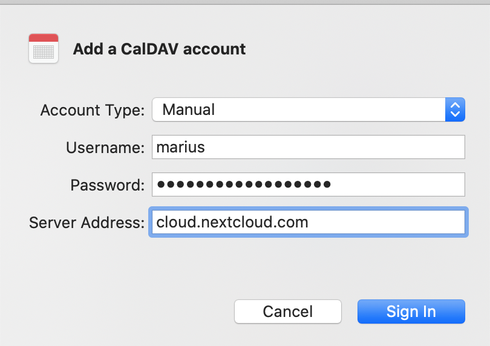

Synchroniser avec macOS
Installer vos comptes
Dans les étapes suivantes vous allez ajouter les ressources de votre serveur pour CalDAV (Agenda) et CardDAV (Contacts) à votre Nextcloud.
Ouvrir system preferences de votre ordinateur macOS
Navigate to Internet Accounts:

Click on Add Other Account… and click on CalDAV Account for Calendar or CardDAV Account for Contacts:

Note
Vous ne pouvez pas installer Agenda et Contacts sur le même compte. Vous devez les configurer dans des comptes distincts.
Sélectionner Manuel comme type de compte et renseigner vos identifiants :
Username: Your Nextcloud username or email
Password: Your generated app-password/token (Learn more).
Server Address: URL of your Nextcloud server (e.g.
https://cloud.example.com)

Cliquer sur Sign In.
Pour CalDAV (Agenda): Vous pouvez maintenant choisir avec quelle application utiliser cette ressource. Dans la pluspart des cas, ce sera l’application "Agenda", parfois vous pourriez aussi vouloir l’utiliser pour vos "Tâches et rappels".

Résolution de problèmes
macOS ne supporte pas la synchronisation CalDAV/CardDAV avec des connections non cryptées http://. Assurez vous d’avoir la connection https:// configurée et activée sur votre serveur et votre client.
Les certificats autosignés doivent être correctement configurés dans le porte clé de macOS.